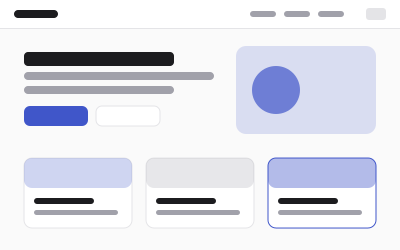
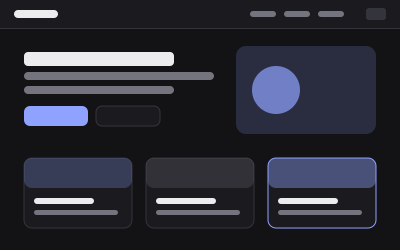
Plain
The starting point. Every component the contract asks for, in a quiet style, on system fonts. The other templates are copies of this one, re-skinned.
retemplate
Plain HTML and CSS, no build step, no framework, light and dark in every one. Each template is also a retoken theme, so its palette drops straight into a retoken site.
Showing 1 of 1


The starting point. Every component the contract asks for, in a quiet style, on system fonts. The other templates are copies of this one, re-skinned.
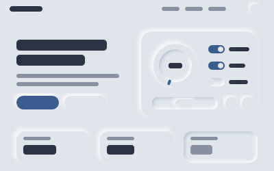
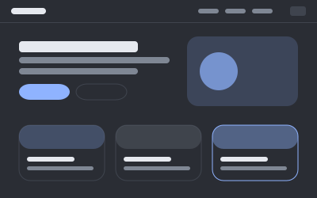
Soft UI: surfaces pushed out of one colour by paired shadows; controls raise, inputs sink, buttons press. Cool grey by day, charcoal by night.
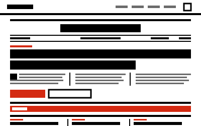
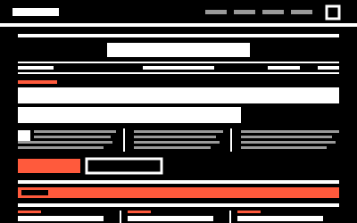
A brutalist newspaper: thick black rules, hard offset shadows, acid yellow and cobalt against white paper and hot red. Headlines in Archivo Black, data in JetBrains Mono.
Frosted glass panels over a soft gradient, blurred colour orbs behind them, and four layers of slowly moving waves. Pill buttons, big radii, system fonts.
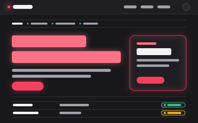

Black zinc, hairline borders and two neon tubes: rose for actions, cyan for information, glowing rather than filling. Both schemes are dark: light is zinc, dark is true black, and nothing is ever white. Space Grotesk and Inter.
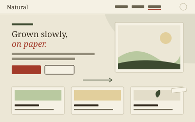
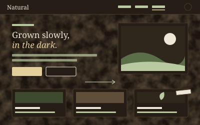
Cream paper, ink, rust and moss with Fraunces headings and tracked kickers; by night the paper becomes soil under cream and light-green text. The feature card is a pressed specimen whose paper tag lifts on hover.
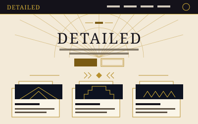
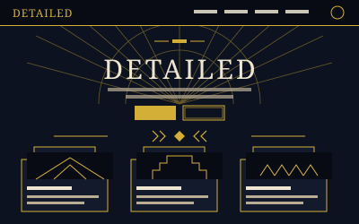
Art deco: cream and bronze by day, navy and gold by night, black bands for the masthead and footer in both. Sunbursts, stepped corners, chevron rules, Limelight over the door, and a sheen of gold leaf on the feature card.
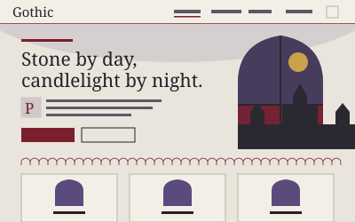
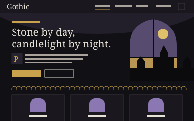
Pale stone and crimson by day, near-black and candle gold by night. Blackletter for the headings only, Crimson Pro for the rest, and one pointed arch cut into the hero, the gallery and the cards. The feature card fills with stained glass on hover.
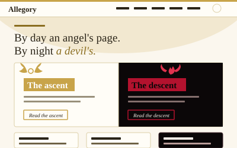
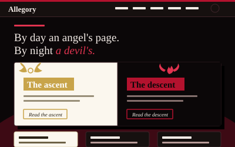
Two faces of one site: ivory, antique gold and wings by day; off-black, red and horns by night, with display type white on gold or black on red. Two classes pin any element to one face, the hero is a diptych of both, and the feature card turns over to show the other.
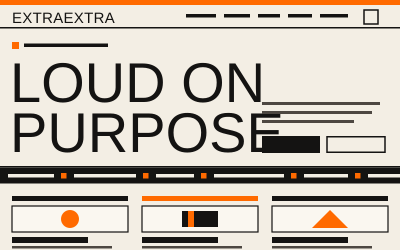
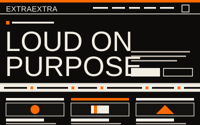
A poster wall. Paper and black type by day, black and paper by night, and one bright orange that never changes. No page width, no corners, no shadows: full-bleed orange and ink bands, 2px rules, Anton in capitals, mono data, and a ticker of facts running under the hero.
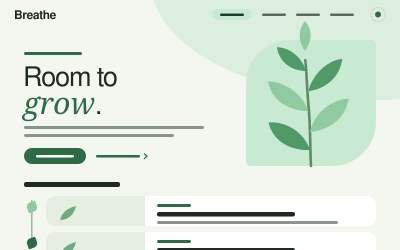
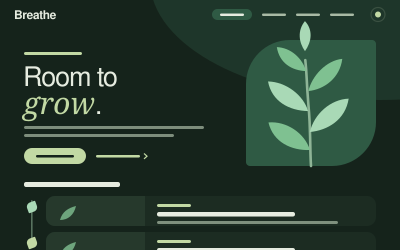
Air, not paper: a white-green ground with a lot of room, mint panels, pictures with a leaf cut and Manrope set light; by night a deep forest green that never turns brown. One frond sways in a slow breeze and nothing else moves.
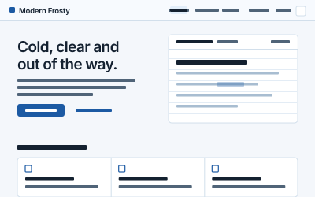
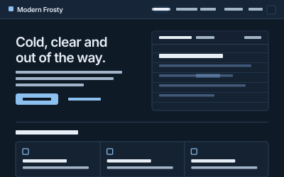
A sky of ice by day, deep slate by night, and every pane on it a sheet of frost blurred at 18px with a rime of light on its edge: the floating pill navbar, the hero, the cards, the footer. Heavy, tight headlines, one cold blue for everything you can click, one warm ember for anything live, and an ink slab that turns the page over. Geist, with a line of Newsreader italic where a heading changes its voice.
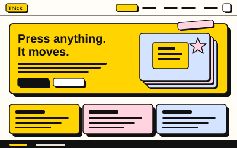
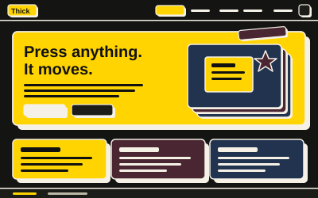
Neobrutalism that smiles: 3px black outlines, solid offset shadows that collapse when you press, one bright yellow and two pastels, Rubik at 900. Dark is near-black with the same yellow and off-white outlines.
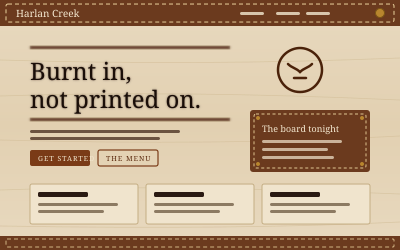
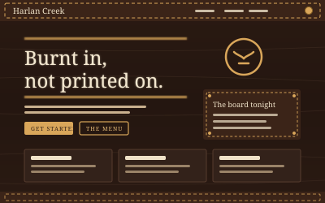
Leather and wood: pale maple by day, dark oiled leather by night. Headings are branded into the board with a scorched halo, the navbar, sidebar and footer are saddle leather with a running stitch, and brass rivets sit on the switch and the accordion. Alfa Slab One and Bitter.
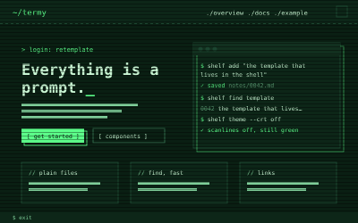
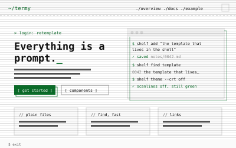
A terminal. By day a dark green screen with phosphor text, a glow and scanlines; by night the same phosphor on true black. JetBrains Mono for everything, no corners, brackets around buttons, a prompt before every kicker, a cursor blinking after the hero, and a CRT overlay you can turn down or off.
No template matches that search and those tags.
templates/<name>/ into your project.css/, js/theme.js, assets/ and, if present, fonts/. Delete the demo pages, docs/ and example/, or start from example/: it is a complete three-page site.Every template uses the same markup, so switching templates later is a swap of three folders. Browser floor: anything from 2024 on.
All templatesDocumentationThe markdown test pageThe form fixture